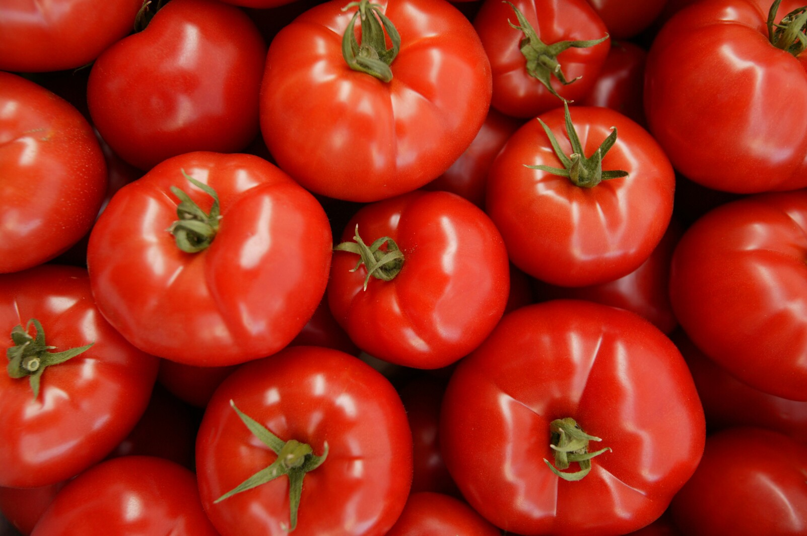

TOMATO
Introduction

The tomato is the edible berry of the plant Solanum lycopersicum, commonly known as the tomato plant. The species originated in western South America, Mexico, and Central America. The Nahuatl word tomatl gave rise to the Spanish word tomate, from which the English word tomato derives. Its domestication and use as a cultivated food may have originated with the indigenous peoples of Mexico. The Aztecs used tomatoes in their cooking at the time of the Spanish conquest of the Aztec Empire, and after the Spanish encountered the tomato for the first time after their contact with the Aztecs, they brought the plant to Europe, in a widespread transfer of plants known as the Columbian exchange. From there, the tomato was introduced to other parts of the European-colonized world during the 16th century.
Tomatoes are a significant source of umami flavor.They are consumed in diverse ways: raw or cooked, and in many dishes, sauces, salads, and drinks. While tomatoes are fruits—botanically classified as berries—they are commonly used culinarily as a vegetable ingredient or side dish.
Numerous varieties of the tomato plant are widely grown in temperate climates across the world, with greenhouses allowing for the production of tomatoes throughout all seasons of the year. Tomato plants typically grow to 1–3 meters (3–10 ft) in height. They are vines that have a weak stem that sprawls and typically needs support.Indeterminate tomato plants are perennials in their native habitat, but are cultivated as annuals. (Determinate, or bush, plants are annuals that stop growing at a certain height and produce a crop all at once.) The size of the tomato varies according to the cultivar, with a range of 1–10 cm (1⁄2–4 in) in width.
Nutritions
Tomatoes are rich in nutrients and are known for their various health benefits. Here are some key nutrients found in tomatoes:
-
Vitamins: Tomatoes are a good source of vitamins, especially vitamin C, vitamin K1, vitamin A (in the form of beta carotene), and vitamin B6.
- Minerals: They contain minerals like potassium, manganese, magnesium, and phosphorus, which are essential for various bodily functions.
-
Antioxidants: Tomatoes are rich in antioxidants such as lycopene, which gives them their red color. Lycopene is known for its potential role in reducing the risk of certain chronic diseases.
-
Fiber: They are a good source of dietary fiber, which is beneficial for digestive health and can help in managing weight.
-
Low in Calories: Tomatoes are relatively low in calories but provide a good amount of nutrients, making them a healthy addition to a balanced diet.
Consuming tomatoes regularly can contribute to a well-rounded and nutritious diet, supporting overall health and well-being.
How to grow Tomatoes

Growing tomatoes is a rewarding experience, and here are some steps to help you get started:
-
Choose the Right Variety: There are many tomato varieties available, such as cherry tomatoes, beefsteak tomatoes, and plum tomatoes. Choose a variety that suits your preferences and growing conditions.
-
Select a Sunny Location: Tomatoes need plenty of sunlight, so choose a spot in your garden or on your balcony that receives at least 6-8 hours of direct sunlight daily.
- Prepare the Soil: Tomatoes prefer well-draining soil that is rich in organic matter. Amend the soil with compost or aged manure to improve its fertility and structure.
- Planting: Plant tomato seedlings or transplants after the last frost date in your area. Dig a hole slightly larger than the root ball of the plant and space the plants about 18-24 inches apart.
- Support: Most tomato varieties benefit from staking or using cages to support the plants as they grow. This helps prevent the vines from sprawling on the ground and keeps the fruits off the soil.
- Watering: Keep the soil consistently moist but not waterlogged. Water deeply at the base of the plants to encourage deep root growth.
- Fertilizing: Use a balanced fertilizer or a fertilizer specifically formulated for tomatoes to provide essential nutrients throughout the growing season. Follow the package instructions for application.
- Pruning: Remove suckers (the small shoots that form between the main stem and branches) to promote better airflow and fruit production. You can also prune the lower leaves to improve air circulation and reduce the risk of diseases.
- Pest and Disease Management: Keep an eye out for common tomato pests like aphids, caterpillars, and tomato hornworms. Use organic methods or safe pesticides to manage pests. Also, monitor for diseases such as blight and wilt, and promptly remove and dispose of affected plant parts.
- Harvesting: Tomatoes are ready for harvest when they reach full color and firmness. Gently twist or cut the fruits from the vine, taking care not to damage the plant.
By following these steps and providing proper care, you can grow healthy and delicious tomatoes in your garden.
How To Grow Wheat Efficiently On A Large Farm
Soil And Nutrients
Tomatoes thrive in well-draining soil that is rich in nutrients. Here's what you should know about the soil and nutrients for growing tomatoes:
- Soil Type: Tomatoes prefer loamy soil with good drainage. Sandy loam or loam soil types are ideal because they retain moisture without becoming waterlogged. Avoid heavy clay soils that can lead to water stagnation and root rot.
- pH Level: The optimal soil pH for tomatoes is between 6.0 and 6.8. You can test your soil's pH using a soil testing kit and make adjustments if needed by adding lime to raise pH or sulfur to lower pH.
- Organic Matter: Incorporating organic matter into the soil, such as compost, well-rotted manure, or aged leaf mold, helps improve soil structure, fertility, and water retention. Aim to add organic matter before planting and as a top dressing during the growing season.
- Nutrients: Tomatoes require several key nutrients for healthy growth and fruit production. These nutrients include:
-
Nitrogen (N): Important for vegetative growth and leaf development. Apply nitrogen-rich fertilizers at the beginning of the growing season but reduce nitrogen levels as the plants start flowering to promote fruiting.
-
Phosphorus (P): Essential for root development, flowering, and fruit set. Use a fertilizer with a higher phosphorus content (such as a tomato-specific fertilizer or one labeled with a higher middle number, e.g., 5-10-5) to encourage strong root growth and abundant blooms.
- Potassium (K): Promotes overall plant health, disease resistance, and fruit quality. Potassium-rich fertilizers, such as those with a higher third number (e.g., 10-10-15), can be applied throughout the growing season to support fruit development.
- Calcium (Ca): Prevents blossom end rot, a common disorder in tomatoes. Ensure calcium availability in the soil by using calcium-rich amendments or adding gypsum (calcium sulfate) if needed.
- Micronutrients: Tomatoes also benefit from micronutrients like magnesium, iron, zinc, and manganese. These micronutrients are often included in balanced fertilizers or can be supplemented separately if deficiencies are observed.
- Mulching with organic materials like straw, shredded leaves, or grass clippings helps conserve moisture, regulate soil temperature, suppress weeds, and add organic matter to the soil as it breaks down.
Regular soil testing can help you monitor nutrient levels and make informed decisions about fertilizer applications. Providing a balanced and nutrient-rich soil environment is key to growing healthy and productive tomato plants.
Fertilizing
Fertilizing tomatoes is crucial for providing the nutrients they need to grow vigorously and produce a bountiful harvest. Here are some tips on how to fertilize tomatoes effectively:
- Choose the Right Fertilizer: Use a fertilizer specifically formulated for tomatoes or one with a balanced NPK (nitrogen-phosphorus-potassium) ratio, such as 10-10-10 or 5-10-10. You can also use organic fertilizers like compost, aged manure, or fish emulsion for a slower release of nutrients.
- Apply fertilizer before planting and again during the growing season. For example, you can mix a balanced fertilizer into the soil before planting, and then apply additional fertilizer every 4-6 weeks during the growing season.
- Application Rates: Follow the instructions on the fertilizer package for the recommended application rates. Over-fertilizing can lead to excessive vegetative growth at the expense of fruit production, so it's important not to apply more fertilizer than necessary.
- Placement: Apply fertilizer evenly around the base of the plants, keeping it at least a few inches away from the stem to avoid burning the roots. Water the plants thoroughly after fertilizing to help nutrients reach the root zone.
- Organic Options: If you prefer organic fertilizers, consider using compost tea, seaweed extract, or bone meal. These organic amendments provide nutrients in a form that is readily available to plants and improve soil health over time.
- Mulching: Mulching around tomato plants with organic materials like straw, shredded leaves, or grass clippings helps retain moisture and reduce nutrient leaching. As the mulch breaks down, it also adds nutrients to the soil.
- Avoid Excessive Nitrogen: While nitrogen is important for healthy foliage, too much nitrogen can lead to lush growth with fewer fruits. If using a fertilizer with a higher nitrogen content, such as 10-5-5, adjust the application rate to avoid nitrogen excess.
- Monitor Plant Health: Pay attention to the appearance of your tomato plants. If they show signs of nutrient deficiencies (e.g., yellowing leaves, stunted growth), consider adjusting your fertilization practices or conducting a soil test to identify specific nutrient needs.
By following these guidelines, you can effectively fertilize your tomato plants and support their growth and productivity throughout the growing season.